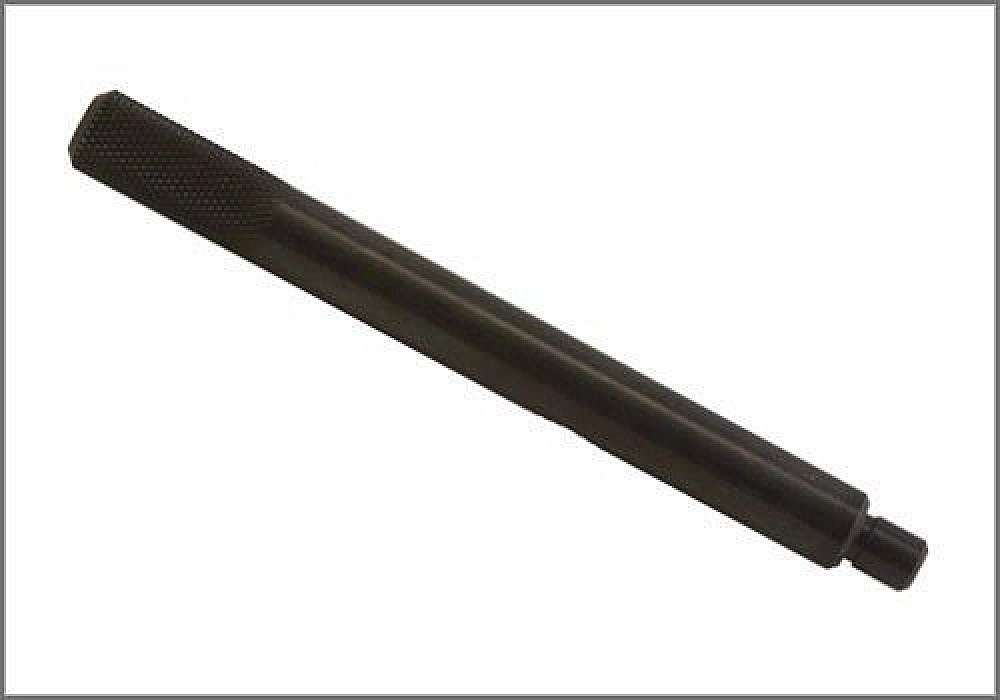

Crankshaft: Tools and Equipment
TDC Pin Only
AST tool# BMW 400-1

For setting crankshaft TDC. Included in BMW 400 Kit. Comparable to BMW tool 112300. Applicable for M21, M40, M41, M42, M43, M43TU, M44, M47, M47TU, M50, M51, M52, M52TU, M54, M56, M57, M57TU, M60, M62, M62TU, M70, M73, S50B30, S50B32, S54 and S62 engines.
- Made in U.S.A.
Contact AST for pricing.
Assenmacher Specialty Tools
1-800-525-2943